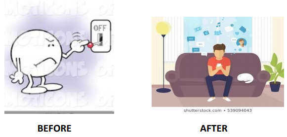
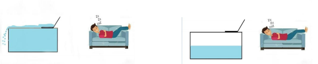
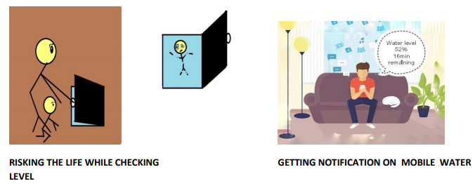
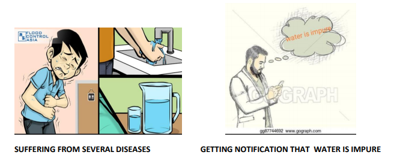
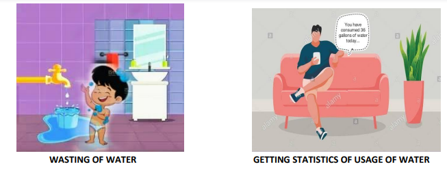

Problem Statement 1
People usually switch ON pump manually that is by going to switch board which need human presence.
Solution
After the person can control the pump using mobile application the advantage is that no human
presence is required .and it can be controlled from any part of the world.

Problem Statement 2
People don’t realize that many times overflow of water occurs due to human errors, and due to lack
of attention and due to human absence(switching ON of motor can be done in only human presence)
Solution
To overcome the problem using IOT automatic ON/OFF of motor

Problem Statement 3
To check the water level in the tank people usually tend to the water tank and check water level by
uplifting the tank cover risking their life because there will be chances of falling into the tanks especially children
and electronic gadgets.
Solution
Using ultrasonic sensor we can determine the volume of water in the tank.

Problem Statement 4
Sometimes the water supplied by the municipal corporation is not pure enough to drink , so by
installing the purity sensor we can check whether the water is portable or not.
Solution
Using water purity sensor which can detect pH, turbidity , ppm.

Problem Statement 5
People don’t know how much water they utilize.
Solution
Using water flow rate and volume measurement sensors. We will can get to know that how much
water he/she is using will be displayed on mobile phones.